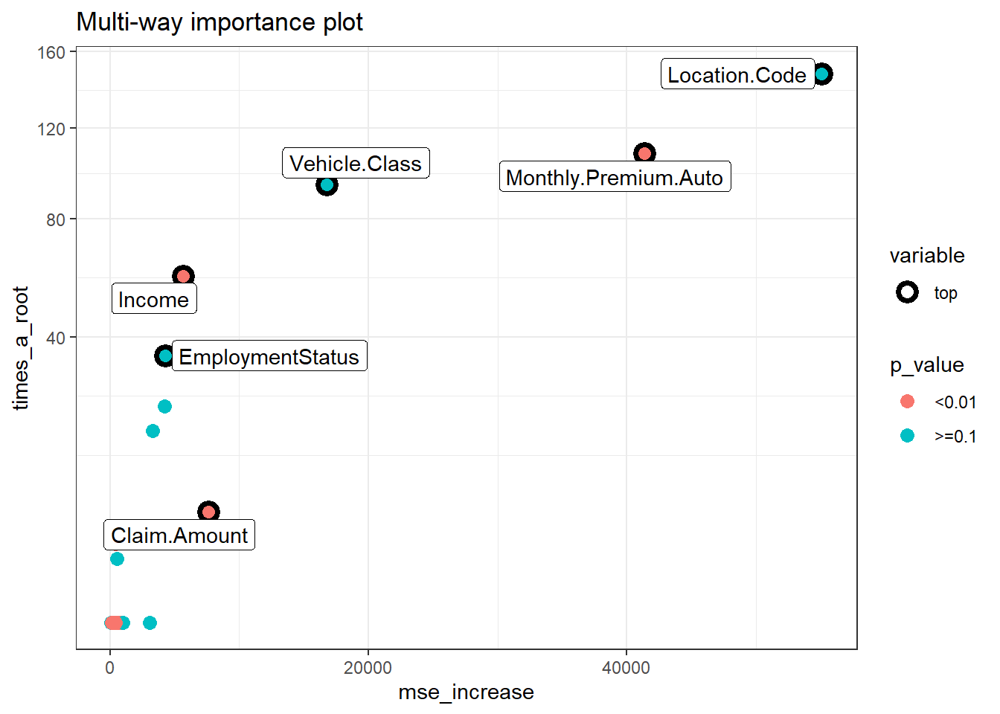

Chapter 6 Bioinformatics
6.1 QTL Mapping for Disease Resistance
6.1.1 Backgorund
Ketahanan pangan merupakan salah satu prioritas utama dalam Rancangan Pembangunan Jangka Panjang Menengah Nasional. Ketersediaan pangan strategis sangat diandalkan dalam upaya mewujudkan ketahanan pangan. Pangan strategis dapat diartikan sebagai komoditas pangan yang terkait dengan kebutuhan sebagian besar masyarakat. Salah satu contoh komoditas pangan strategis menurut kementerian pertanian Indonesia adalah cabai. Sering kali petani cabai mengalami gagal panen dikarenakan serangan penyakit bakteri dan jamur pada akar dan daun. Salah satu penyakit yang dominan yang menyerang tanaman cabai adalah jamur Phytophthora capsici.
Perlu dilakukan sebuah penelitian untuk mengetahui letak gen yang mempengaruhi sifat rentan terhadap jamur Phytophthora capsici. Beberapa hasil penelitian telah membuktikan analisis Quantitative Trait Locus sukses mengidentifikasi sifat pada tanaman. Maka dari itu sebagai bahan kajian peningkatan kualitas tanaman cabai, menggunakan data sekuen DNA yang sudah tersedia, dengan pendekatan metode QTL akan diidentifikasi letak gen yang berhubungan secara signifikan terhadap penyakit Phytophthora capsici.
6.1.2 Modelling Analysis
6.1.2.1 Import Data
pacman::p_load("ASMap","qtlcharts","qtl", "ggplot2","ggpubr","ggdendro", "dendextend", "factoextra", "car", "igraph")#> package 'qtl' successfully unpacked and MD5 sums checked
#> package 'ASMap' successfully unpacked and MD5 sums checked
#>
#> The downloaded binary packages are in
#> C:\Users\dyahn\AppData\Local\Temp\Rtmp8gfNcq\downloaded_packages
#> package 'qtlcharts' successfully unpacked and MD5 sums checked
#>
#> The downloaded binary packages are in
#> C:\Users\dyahn\AppData\Local\Temp\Rtmp8gfNcq\downloaded_packages
#> package 'ggdendro' successfully unpacked and MD5 sums checked
#>
#> The downloaded binary packages are in
#> C:\Users\dyahn\AppData\Local\Temp\Rtmp8gfNcq\downloaded_packages
#> package 'dendextend' successfully unpacked and MD5 sums checked
#>
#> The downloaded binary packages are in
#> C:\Users\dyahn\AppData\Local\Temp\Rtmp8gfNcq\downloaded_packages
#> package 'ellipse' successfully unpacked and MD5 sums checked
#> package 'flashClust' successfully unpacked and MD5 sums checked
#> package 'leaps' successfully unpacked and MD5 sums checked
#> package 'scatterplot3d' successfully unpacked and MD5 sums checked
#> package 'FactoMineR' successfully unpacked and MD5 sums checked
#> package 'factoextra' successfully unpacked and MD5 sums checked
#>
#> The downloaded binary packages are in
#> C:\Users\dyahn\AppData\Local\Temp\Rtmp8gfNcq\downloaded_packagesdataset <- read.cross(
format = "csv",
dir = "assets/05-bioinformatics/",
file ="data.csv",
sep = ";",
genotypes = c("a","h","b"),
alleles = c("a","b")
)#> --Read the following data:
#> 296 individuals
#> 26 markers
#> 1 phenotypes
#> --Cross type: f2summary(dataset)#> F2 intercross
#>
#> No. individuals: 296
#>
#> No. phenotypes: 1
#> Percent phenotyped: 100
#>
#> No. chromosomes: 1
#> Autosomes: 5
#>
#> Total markers: 26
#> No. markers: 26
#> Percent genotyped: 100
#> Genotypes (%): aa:24.0 ab:48.4 bb:27.6 not bb:0.0 not aa:0.0Diatas merupakan hasil ringkasan dari data. Populasi yang digunakan hasil persilangan tipe F2 intercross yang menghasilkan individu sebanyak 296 jenis. Data fenotipe menjelaskan tentang skoring ketahanan tanaman cabai terhadap Phytophthora capsici. Interval skornya diantara 0 sampai dengan 5. Tanaman cabai yang memiliki resisten terhadap Phytophthora capsici akan diberi skor 0, sedangkan yang rentan akan diberi skor 5. Sebanyak 100% data fenotipe berhasil terbaca, artinya tidak ada data yang hilang (NA). Pada data ini hanya menggunakan 1 kromosom yang diamati, yaitu kromosom ke-5 dari total 11 kromosom cabai.
ggplot(data = dataset$pheno, mapping = aes(x = dataset$pheno$Score)) +
geom_density() +
labs(
title = "Distribusi sebaran skor fenotipe",
x = "Skor ketahanan *Phytophthora capsici*"
) +
theme_minimal()
shapiro.test(dataset$pheno$Score)#>
#> Shapiro-Wilk normality test
#>
#> data: dataset$pheno$Score
#> W = 0.78902, p-value < 0.00000000000000022Berdasarkan kurva dan uji hipotesis, maka keputusannya data fenotipe tidak berdistribusi normal (distribusi bimodal). Menurut penelitian yang dilakukan Margawati (2015) ketika kurva fenotipe menunjukkan distribusi bimodal, maka itu merupakan indikasi terdapat gen mayor (yang signifikan mempengaruhi).
6.1.2.2 Exploratory Data Analysis
cg <- comparegeno(dataset)
#dendogram clastering
dataclust <- abs(cg - 1)
# Dissimilarity matrix
df <- scale(dataclust)
d <- dist(df, method = "euclidean")
hc3 <- hclust(d, method = "ward.D2")
#phylogenetic tree
dend_plot <- fviz_dend(
hc3, k = 4, # Cut in four groups
cex = 0.5, # label size
k_colors = "jco"
)# extract the dendrogram data
dend_data <- attr(dend_plot, "dendrogram")
# Cut the dendrogram at height h = 10
dend_cuts <- cut(dend_data, h = 90)
# Plot subtree 3
fviz_dend(
dend_cuts$lower[[3]], main = "Subtree 3",
lwd = 1.3, ggtheme = theme_bw(), horiz = TRUE
)Berdasarkan hasil clusternig di atas, dapat diketahui individu cabai dengan nomor 173, 185, 202, 247, 251, 291, 14, dan 216 berada pada satu cluster yang sama. Hal ini masuk akal, karena individu tersebut berasal dari tetua yang sama tipenya, sehingga karakteristiknya hampir sama. Jika antar individu tidak memiliki kemiripan genotipe, maka akan terpisah jauh atau berada pada branch yang berbeda.
6.1.2.3 QTL Analysis
Interval Mapping atau pemetaan interval menjadi pendekatan yang populer pada analisis QTL. Dalam interval mapping, masing-masing penanda sekuen akan dihitung nilai Logarithm of the Odds (LOD). Mudahnya, skor LOD adalah nilai statistik yang digunakan pada data genetika untuk mengukur apakah 2 gen atau lebih yang sedang diamati cenderung terletak berdekatan satu sama lain atau tidak. Skor LOD 3 atau lebih secara umum dapat dipahami bahwa 2 gen tersebut terletak berdekatan pada kromosom.
# Marker regression
dataset_rf <- est.rf(dataset, maxit = 200, tol = 1e-8)
out.mr <- scanone(dataset_rf, method = "mr")
# Harley-knott regression
datalink_1 <- calc.genoprob(dataset_rf, step=1, error.prob=0.001, map.function = "haldane")
out.hk <- scanone(datalink_1, method="hk")
# Multiple Imputation
set.seed(1997)
datalink_2 <- sim.geno(dataset_rf, step=1, error.prob=0.001)
out.imp <- scanone(datalink_2, method="imp")par(mfrow=c(1,1))
plot(out.imp, out.hk, out.mr, ylab="LOD Score",
lty = c(1,1,2), col = c("black", "blue", "red"),
main = "Perbandingan metode IMP, HK, EHK",
lwd = 2.5, ylim = c(0,10))
legend("topleft", legend=c("Multiple Imputation",
"Harley-Knott Regression","Extented
HK"),
col=c("black", "blue", "red"), lty=c(1,1,2), cex=0.7, lwd
= 2,
title = "Metode")
Pemilihan motode terbaik berdasarkan skor panelized LOD yang tertinggi. Hasilnya, metode Imputation memperoleh LOD yang tertinggi yaitu 11.53. Selanjutnya, mencari formula regresi menggunakan metode imputation:
dataqtl.step0 <- sim.geno(
cross = dataset_rf, step = 0, error.prob = 0.001,
map.function = "haldane", n.draws = 296
)set.seed(1)
outsw1 <- stepwiseqtl(dataqtl.step0, verbose = TRUE, method = "imp")
outsw1outsw1 <- readRDS(file = "assets/05-bioinformatics/outsw1.RDS")
chr <- c(5,5,5)
pos <- c(117.34, 159.31, 256.48)
qtl <- makeqtl(dataqtl.step0, chr, pos)
my.formula <- y ~ Q1 + Q2 + Q3 + Q1:Q2
out.fitqtl <- fitqtl(dataqtl.step0, qtl=qtl, formula=my.formula,
get.ests = F)
summary(out.fitqtl)#>
#> fitqtl summary
#>
#> Method: multiple imputation
#> Model: normal phenotype
#> Number of observations : 296
#>
#> Full model result
#> ----------------------------------
#> Model formula: y ~ Q1 + Q2 + Q3 + Q1:Q2
#>
#> df SS MS LOD %var Pvalue(Chi2) Pvalue(F)
#> Model 10 367.1198 36.711980 24.81033 32.0229 0 0
#> Error 285 779.3093 2.734418
#> Total 295 1146.4291
#>
#>
#> Drop one QTL at a time ANOVA table:
#> ----------------------------------
#> df Type III SS LOD %var F value Pvalue(Chi2)
#> 5@117.3 6 207.13 15.150 18.068 12.625 0.000
#> 5@159.3 6 162.96 12.205 14.215 9.933 0.000
#> 5@256.5 2 31.26 2.528 2.726 5.715 0.003
#> 5@117.3:5@159.3 4 151.64 11.428 13.227 13.864 0.000
#> Pvalue(F)
#> 5@117.3 0.00000000000125 ***
#> 5@159.3 0.00000000058772 ***
#> 5@256.5 0.00368 **
#> 5@117.3:5@159.3 0.00000000024024 ***
#> ---
#> Signif. codes: 0 '***' 0.001 '**' 0.01 '*' 0.05 '.' 0.1 ' ' 1Diperoleh formula skor ketahanan terhadap phytophthora capsici sebagai berikut:
\[Formula: y \sim Q1 + Q2 + Q3 + Q1:Q2 \]
Keterangan:
- y = Skor fenotipe ketahanan terhadap penyakit phytophthora capsici
- Qi = Marka QTL ke-i
Jika hasil summary model diatas diringkas kedalam bentuk tabel, maka informasinya seperti berikut:
tibble(
Variabel = c("Q1", "Q2", "Q3", "Q1:Q2"),
`Kode Marka` = c("PMMCB81", "PMMCB34", "MCA32", "PMMCB81 : PMMCB34"),
`% Var` = c(18.25, 13.36, 2.79, 12.62)
)#> [38;5;246m# A tibble: 4 x 3[39m
#> Variabel `Kode Marka` `% Var`
#> [3m[38;5;246m<chr>[39m[23m [3m[38;5;246m<chr>[39m[23m [3m[38;5;246m<dbl>[39m[23m
#> [38;5;250m1[39m Q1 PMMCB81 18.2
#> [38;5;250m2[39m Q2 PMMCB34 13.4
#> [38;5;250m3[39m Q3 MCA32 2.79
#> [38;5;250m4[39m Q1:Q2 PMMCB81 : PMMCB34 12.6Kolom pertama dan kedua menjelaskan tentang simbol model QTL beserta nama markanya. Kolom persentase variansi (%var) adalah estimasi dari variansi fenotipe yang dijelaskan oleh marka PMMCB81, PMMCB34, MCA32, dan interaksi marka PMMCB81:PMMCB34. Total %var sebesar 46,3%. Mempunyai makna bahwa kemampuan seluruh marka dalam model untuk menjelaskan skor variansi fenotipe ketahanan tanaman cabai terhadap bakteri phytophthora capsici adalah sebesar 46,3%, sedangkan sisanya dijelaskan oleh marka lain diluar penelitian.
Visualisasi peta genetik dengan model QTL yang signifikan dan hasi skor LOD metode multiple imputation disajikan pada gambar dibawah ini.
par(mfrow=c(1,2))
plot(outsw1, col="red", justdots = F, show.marker.names = F)
plot(out.imp$lod, out.imp$pos, col="red", xlab = "LOD",
ylim = c(315, 0),las = 1, ylab = "Map Position (cM)",
type = "l", lwd = 3,
main = "Interval Mapping")
# abline(v=tresh[4], lty = "dotted", lwd=3, col="darkgrey")
legend("bottomright", legend="Multiple Imputation",
col="red", lty=1, cex=0.7, lwd = 2,
title = "Metode", bty = "n")6.1.3 Conclusion
Hasil model QTL yang terbentuk dengan (\(\alpha\) = 5%) formulanya y ~ Q1 + Q2 + Q3 + Q1:Q2 yang secara urut merupakan penanda sekuen (marka) dengan kode PMMCB81, PMMCB34, MCA32, dan interaksi PMMCB81 x PMMCB34. Skor LOD masing-masing model sebesar 5,80 (PMMCB81), 2,74 (PMMCB34) dan 8,6 (MCA32). Model QTL tersebut mampu menjelaskan 46,3% variansi skor fenotipe ketahanan tanaman cabai terhadap jamur phytophthora capsici. Rekomendasi yang dapat diberikan, perlu dilakukan investigasi lebih lanjut pada ketiga marka tersebut untuk memperbaiki atau mengembangkan kultivar tanaman cabai yang resisten terhadap penyakit layu yang disebabkan oleh jamur phytophthora capsici.